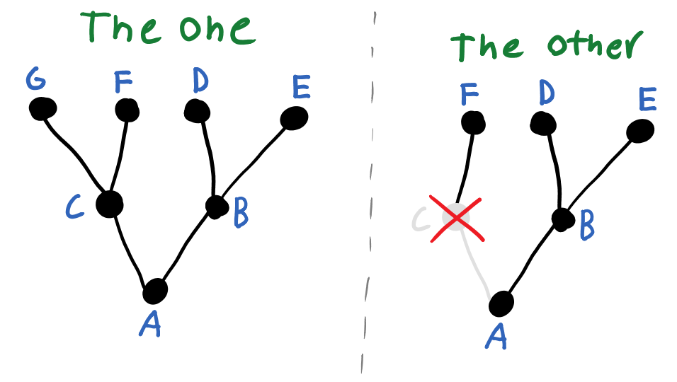

Free/libre and Open Source ‘Exobrain’ tools for notes, to do, task management etc.
My workshop on writing more performant R code
My problems with multipanel figure and why I think they are an inefficent way of communicating scientific results, a problem for accessibility, and proposals for testing these ideas
I post I wrote for lesswrong on the subject of free/libre software and why it matters
I made an appearance on the bayesian conspiracy podcast to talk about aging biology.
The Xenothesis Podcast, our podcast about Octavia E. Butler’s Xenogenesis trilogy
My PhD Thesis
The genomic loci of specific human tRNA genes exhibit ageing-related DNA hypermethylation
Rnotebooks are scientific notebooks for R, somewhat like jupyter for anyone coming from python

Explaining the concept of inferential distance, the distance between different beliefs in units of logical steps
Check out the Cognitive Bias Cards Repo for a deck of cards featuring 104 cognitive biases.